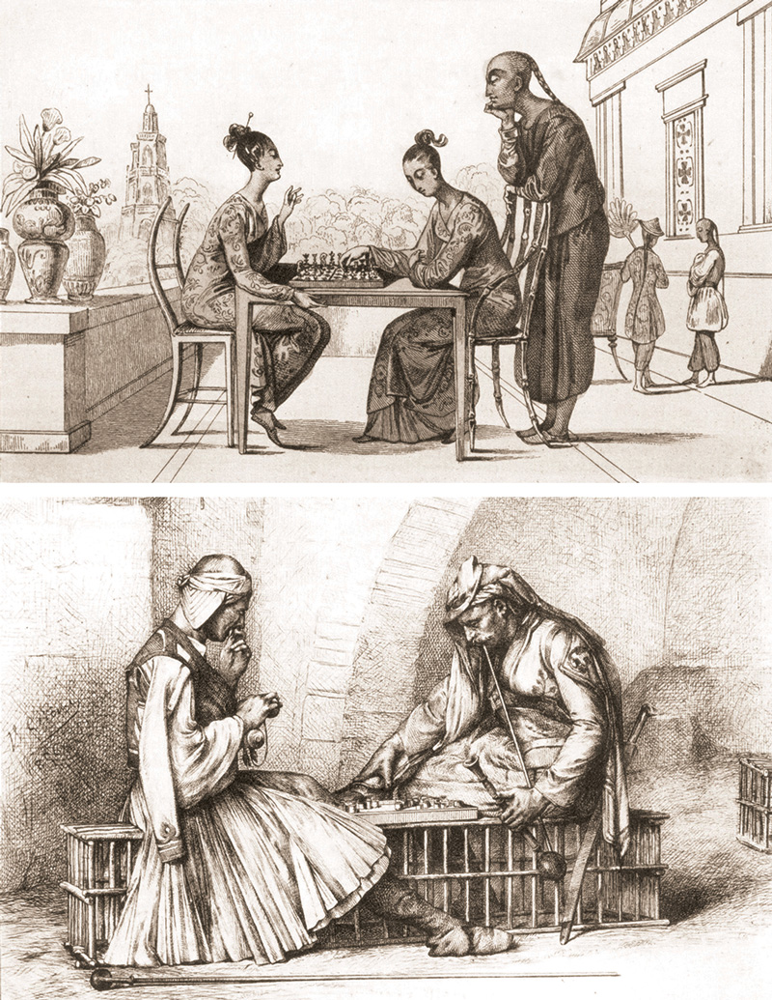
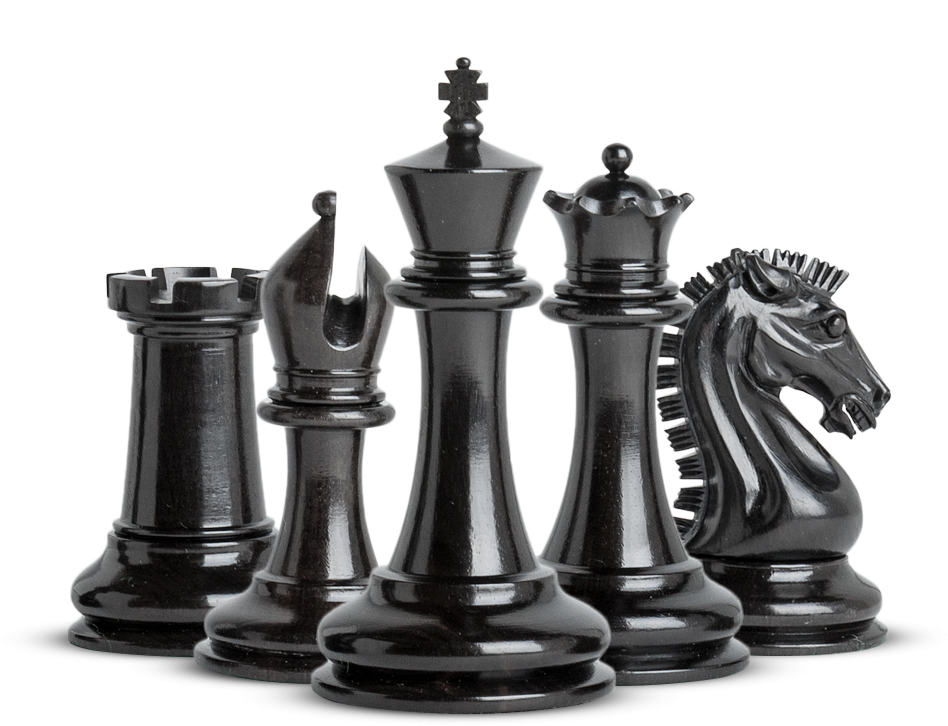

השורשים
ישנן לא מעט מחלוקות לגבי שורשי המשחק, האזכור הראשון על משחק הדומה למשחק השחמט היה בשנת 600 לספירה אך לא נמצאו הוכחות מוצקות לכך שהמשחק אכן שוחק אלא רק עד המאה התשיעית לספירה. באותו עת נמצא תיעוד על משחקים דומים לשחמט בתרבות ההודית, הערבית, האסלאמית והסינית. באשר לאם היה להם מקור משותף – זה נמצא בגדר השערות בלבד. המשחק העתיק היה מאוד שונה מהגרסה המודרנית אותה אנחנו מכירים כיום, וליתר דיוק התכונות היחידות שנשמרו כיום מן העת העתיקה הן של הצריח והפרש. המלכה והרץ היו מוגבלים בכוחם מה שגרם למשחק להיות איטי ונטול דינמיות. ישנן תאוריות שאומרות שאולי בתחילת דרכו לא הייתה לשח כוונה לתפקד כמשחק אלא ככלי אסטרטגי בתכנון לחימה בשדה הקרב, והרי הוא מכיל את כל היחידות שהרכיבו את מערך הלחימה – הרגלי, הפרשים, הצריחים סימלו את חיל המרכבות והרצים את הפילים.
בימי הביניים שחמט שוחק כמשחק הימורים –ניצחון או פתירת בעיה של הכנעת מלך היריב במספר מהלכים קצוב היה מזכה את הזוכה בכסף. אלמנט ההימורים לעיתים היה משודרג על ידי שימוש בקובייה לקביעת איזה כלי יצטרך לבצע מהלך, מה שהוליד תאוריה מעניינת נוספת שאולי זאת הסיבה לכך שקיימים 6 סוגי כלים – אחד לכל פאה בקובייה.
העידן המודרני
השינוי המשמעותי שעיצב את המשחק למה שאנחנו מכירים קרה בשנים 1475-1495. במהלך עשרים השנים הללו נוצר מערך חוקים חדש למשחק ומספר שינויים נעשו בחוזקם ויכולות הכלים השונים, וכל זאת בלי לפגוע בתשתית המשחק. במהרה החוקים החדשים הופצו בכל אירופה והרץ חתך את אלכסוני הלוח לכל אורכם בעוד שקודם הוגבל רק לקפיצות של שתי משבצות. הותר גם הרסן מן המלכה שהייתה לפני כן מוגבלת לתנועה אלכסונית של משבצת אחת וכעת הפכה לכלי הכי חזק במשחק, בעלת יכולת תנועה לכל כיוון כאוות נפשה. החוקים החדשים הולידו איתם ספרות חדשה הקשורה לנושא, ספרים שלשם שינוי סיפקו עצות על איך לשחק את המשחק ולא פירשנו את השתקפות החיים בכלי המשחק כמו הספרים שקדמו לכך.
הראשון שבהם הוא Repeticion de Amores y Arte de Axedrez של לואיס דה לוסינה שראה אור בשנת 1497. הספר כלל שני חלקים כאשר הראשון דיבר על אהבה (והתקפה חריפה על פמיניזם) והחלק השני היה אוסף של מצבי שחמט שונים, ווריאציות פתיחה וניתוחן ומספר עצות מועילות במיוחד כגון: "אם משחקים בלילה מקם את הנר לשמאלך, אם משחקים באור יום – הושב את יריבך מול אור השמש. יריבך יהיה חלש יותר אם זה עתה אכל או שתה לשוכרה."
ככל שהמשחק הלך והושרש בתרבות האירופאית, כך גם הספרים שנכתבו היו ממוקדים יותר במשחק עצמו, באסטרטגיות ובניתוח מעמיק יותר והיוו משאב מצויין ללמידה. התקופה הולידה גם "מרכזי שח" רבים כאשר כל ארץ התחילה ב"מסע חימוש" כדי לגדל מוחות שחמט שייצגו את מדינתם בזירה הבינלאומית. שיאם של אותם המועדונים היה במאה ה-19, המפורסמים שבהם היו ה- Café de la Regence בפריס וה-Simpsosn's Divan הלונדוני. אלו אומנם לא היו מוגדרים כמועדונים שחמט אלה כמקום מפגש של שחקני במה, פוליטיקאים, אמנים אך בעיקר היו חביבים על שחקני השחמט החזקים שהיו מבקרים באופן קבע כדי להפגין את כישוריהם. הבולט שבהם היה הוורד סטאוטון האנגלי אשר טרם רבות למשחק הן בהוצאות הספרים שכתב, מגזין השחמט שהיה העורך שלו והן באירגון תחרות השחמט האירופאית הראשונה ב-1851.
צעד נוסף של מודרניזציה התרחש באותה תקופה והוא עיצוב מחודש לכלי השחמט. טרם לכך כלי המשחק היו כל כך דומים שהיה קשה להבדיל ביניהם - הדבר קרא לעיצוב מחודש של הכלים. נת'ניאל קוק, יליד לונדון, נתן לכלי את הצורות שאנחנו מזהים כיום. הפרש קיבל את צורת הסוס, הצריח את מבנה צריח הלבנים, הרץ את מראה המזכיר את הבישופ (דרגת כמורה בנצרות) והמלך והמלכה קיבלו את כתריהם. המעצב החליט לתת כבוד לאותה דמות מפתח בעולם השחמט דאז, וסט הכלים החדש נקרא – סט סטאוטון, שעד היום מהווה העיצוב הרשמי בתחרויות בינלאומיות.
ניתן להגיד אם ככה שלמעט הכנסת הדינמיות למשחק בסוף המאה ה-16, עלתה קרנו של המשחק בעיקר במאה ה-19, כאשר לא נתפס יותר כתחביב בלבד אלא כעיסוק מכובד לכל דבר. הוצאו ספרים רבים שדנו ברזי המשחק ובניתוח מעמיק של תכניו, נפתחו מועדוני שחמט רבים, ואף לעיתים היווה הלוח המשובץ כשדה קרב על כבוד ארץ שלמה בזירת השחמט הבינלאומית. ב-1886 נערכה אליפות העולם הראשונה, ומאז ועד היום הפיקה 16 אלופי עולם.